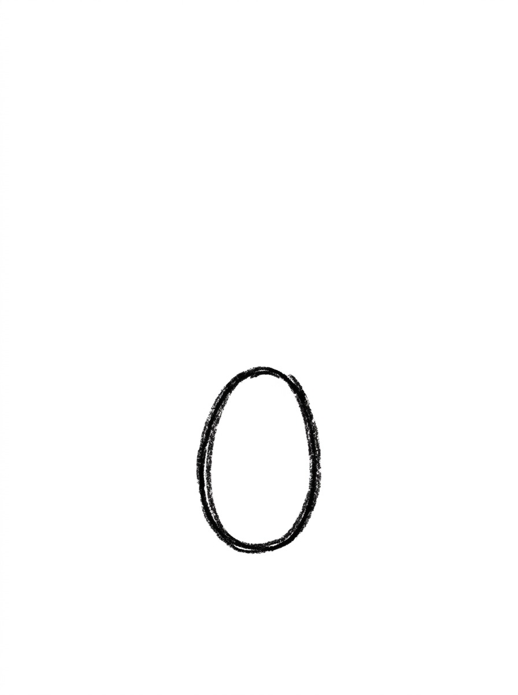
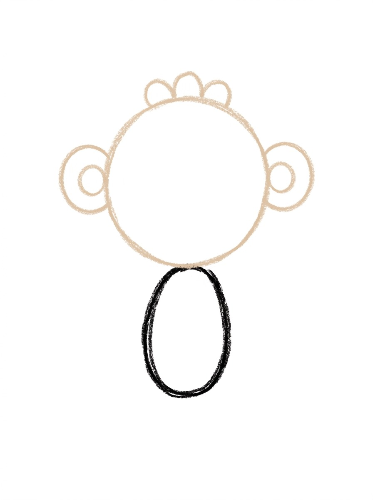
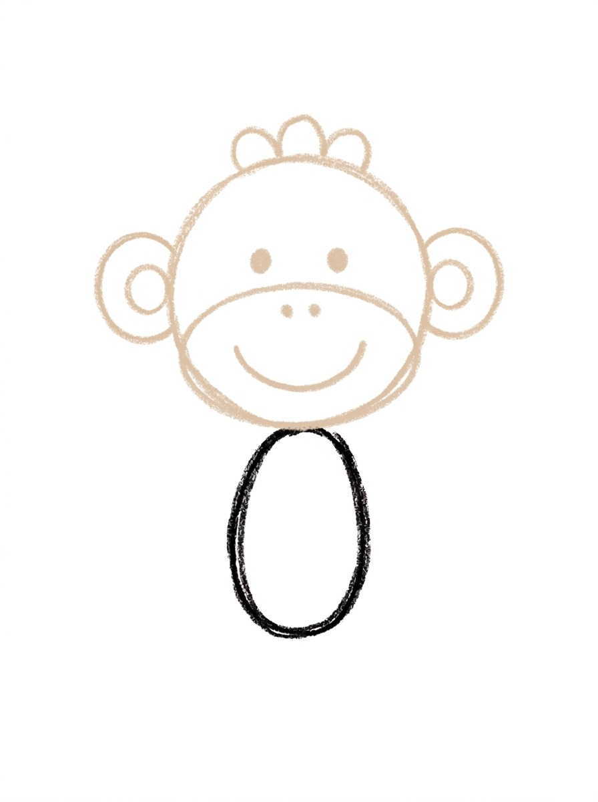
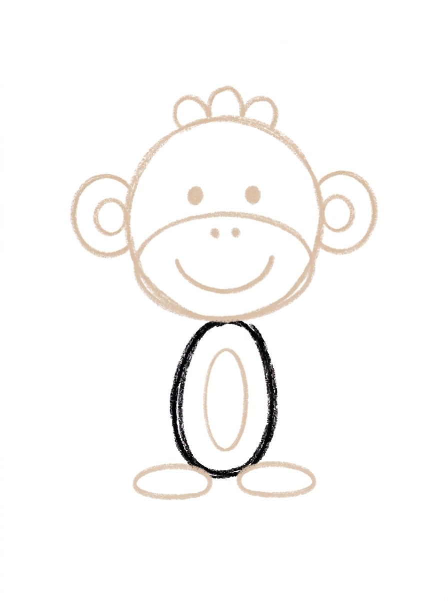
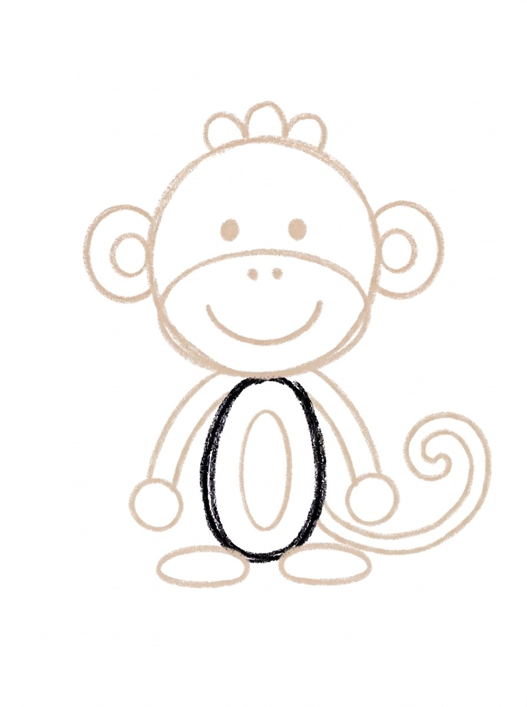

Monkey Drawing for Kids How to Draw A Monkey in 6 Easy Steps
Quick Answer
Draw a monkey in six easy steps: a small upright oval body, a big round head with ears and a hair tuft, a smiling face, a belly patch and feet, then long arms and a curly tail. Color it warm brown with a tan face. Made for ages 3 and up — print free, no signup.
At a Glance
- Subject: How to draw a monkey
- Ages: 3+
- Steps: 6 steps
- Time: ~15 min
- Difficulty: Easy
- Supplies: Paper, crayons
Monkeys are made of circles and ovals — a small body, a big round head, circle ears, and one long curly tail. This tutorial stacks those simple shapes in order, so the monkey builds itself one friendly piece at a time.
✏️ Draw Your Monkey in 6 Easy Steps
One step per box — this step by step monkey drawing shows each new part in a different color so kids can see exactly what changed.
Step 1: The Body

Draw one upright oval in the lower-middle of your paper — that's the monkey's body. Leave lots of empty space above it for the head.
Step 2: The Head and Ears

Add a big circle above the body for the head, its bottom edge just touching the top of the body. Add a circle ear with a smaller circle inside it on each side of the head, and three small bumps in a row on top for the hair tuft.
Step 3: The Face

Draw a wide oval across the lower half of the head — that's the muzzle. Add two eye dots above the oval, two tiny nostril dots inside the top of it, and one big smile curve.
Step 4: The Belly and Feet

Add one big oval on the front of the body for the belly patch, and one flat oval foot at the bottom on each side of the body.
Step 5: The Arms and Tail

Add one long arm hanging down each side of the body, starting at the body's middle and ending in a round hand. Then add one long tail curling out from behind the body.
Step 6: Color It In

Color your monkey! Warm medium brown for the body, head, ears, hair tuft, arms, tail, and feet, light tan for the muzzle, belly, and inner ears, and dark brown for the eyes, nostrils, and smile. Great drawing!
📊 Monkey Drawing by Age
Every age can join in — just adjust the job.
| Age | What they can do | Tip |
|---|---|---|
| 3-4 | Draw the body oval and color the finished monkey warm brown. | Draw the body low on the page — the big head sits above it and needs all the headroom it can get. |
| 4-5 | Add the head with its circle ears and hair tuft, the belly patch, and the two feet. | The head just touches the top of the body at one point, like a ball resting there — show them that 'kiss' point before they draw. |
| 6+ | Finish all six steps, including the muzzle face, the long arms with round hands, and the tail's spiral curl. | Let older kids curl the tail into a tighter spiral or loop it around a banana they draw beside the monkey. |
🖨️ Download Your Free Monkey Drawing Printable
The printable lays out all 6 steps one per box, big enough for little hands — kids draw right alongside each step.
⬇️ Open Free Printable 🖨️ Print🎁 Free printable for ages 3+
🐵 Monkey Jungle Page
Give your monkey a jungle: draw two or three curvy vines hanging from the top of the page, big leaves in the corners, and a banana or two within reach of that long tail. Then decide together what this monkey is up to — swinging to visit a friend, guarding the best bananas, or playing hide-and-seek in the leaves. Write one sentence about the monkey under the drawing (or dictate it for a grown-up to write).
What You'll Need to Draw A Monkey
All you need is a pencil, an eraser, and crayons or markers. For the colors in the tutorial, have warm medium brown ready for the body, head, ears, hair tuft, arms, tail, and feet, light tan for the muzzle patch, belly patch, and inner ears, and dark brown for the eyes, nostrils, and smile. Regular printer paper or a sketchbook both work.
What They're Learning
This tutorial practices ovals and circles at several sizes, symmetry (two ears, two feet, two arms placed the same on both sides), and counting small sets — two ears, three hair bumps, two nostrils. Kids also work on placement: keeping the head above the body and touching at one point, and controlling a long curving line for the tail that finishes in a spiral.
Make It Yours
Try a monkey holding a banana (one curved yellow shape in a round hand), a sleeping monkey with curved closed eyes and Z letters, a baby monkey drawn with the same steps but smaller and with an even bigger head, or a whole troop of monkeys down a page, each with a different tail curl.
🛒 Our Favorite Drawing Supplies
These are the supplies we reach for in our own home — washable (because kids), quality paper, and enough colors to avoid fights.
As an Amazon Associate, MomYouNeedThis earns from qualifying purchases — at no extra cost to you.
💡 Monkey Drawing Tips for Parents
Step 2 sets up the whole drawing: the head sits above the body and just touches it at one point — it does not overlap. If your child draws the head overlapping the body, the monkey still works, but the stacked sock-monkey look comes from that single touching point. Also keep the body low on the page in step 1; a body drawn in the middle leaves no room for the head above it.
Step 5's arms start at the body's middle sides, not at the top — arms that start too high look like they're growing out of the head. Have your child point to the middle of the body before drawing each arm, let the arms hang long with the round hands beside the body's lower half, and finish with the tail in one confident sweep rather than lots of little lines.
🐵 Monkeys in the Real World
Real monkeys live in the warm forests of Africa, Asia, and South America, and most of them spend their days up in the trees. A monkey's long tail works like an extra balancing pole as it leaps from branch to branch — and some monkeys can even grip with theirs. Monkeys live in big family groups called troops, where everybody grooms, plays, and watches for danger together.
A monkey's menu is whatever the forest offers: fruit, leaves, seeds, flowers, and the odd insect. They are clever with their hands, peeling, poking, and prying things open. Ask your child what their monkey is about to grab — the answer usually starts a story all by itself.
✋ Warm-Up: Swinging Curves
Monkeys are built from curves, so warm up with curves. Fill a scrap page with big swinging arcs — rainbow shapes, hills, and smiles — then try the same arcs upside down. Add pairs of circles for ears: two round circles the same size, side by side, again and again until matching them feels easy.
If a curve wobbles during the real drawing, leave it. A slightly wobbly line on a monkey reads as fur and movement, and redrawing it usually makes a bigger mess than the wobble did. Save the eraser for lines that truly went to the wrong place.
📖 Give Your Monkey a Story
Monkeys are natural comedians, so give yours a scene to explain. What did this monkey just spot? What is it reaching for, and is it supposed to have it? One dictated sentence under the drawing — 'Milo the monkey found the biggest banana in the tree' — and the page becomes the start of a story your child can retell.
The parrot tutorial makes a perfect page two: parrots share the monkey's jungle home, and kids enjoy drawing the monkey's noisy neighbor. Two finished pages side by side are the beginning of a jungle book of their own. The jungle cast grows with how to draw a parrot in the treetops and how to draw a snake on the forest floor.
❓ Monkey Drawing FAQs
What is the easiest way to draw a monkey?
Start with one upright oval for the body, then stack simple shapes on it: a big round head above it, circle ears, an oval muzzle with a smile, a belly oval, long arms, and a curly tail. Every part is a circle or an oval, so there's nothing tricky to freehand.
What age is this monkey drawing for?
It's made for ages 3 and up. Younger kids can manage the body, head, and coloring, while older kids add the face details, arms, and tail curl themselves.
What supplies do we need?
A pencil, an eraser, paper, and crayons or markers. For colors you'll want warm medium brown, light tan for the muzzle, belly, and inner ears, and dark brown for the face lines.
Is the printable really free?
Yes — every printable on MomYouNeedThis is 100% free, including this monkey drawing tutorial. There is no signup, no email, and no catch — just download, print, and draw.
How do I print it?
Open the PDF and choose Print, then set the scale to 100% (sometimes called Actual Size) so the steps print at full size. The tutorial is designed for regular US Letter paper, and plain printer paper works perfectly.
Why does the monkey's head sit on top of its body?
In this drawing the head is a big circle that sits above the smaller body and just touches it at one point, like a ball resting on top. That big-head, small-body proportion is what makes the monkey read as cute and baby-like.
How do I draw the monkey's tail?
The tail comes out from behind the body's lower side, sweeps down and up in one big curve, and finishes in a small spiral curl. Draw one smooth line out, one smooth line back, then add the little swirl at the end.
Can my monkey be a different color?
Of course — try a gray monkey, a golden monkey, or a full rainbow party monkey. Keep the muzzle, belly, and inner ears a lighter color than the rest and it will still read clearly as a monkey.
📚 Keep Exploring
- ✏️ All 76 Drawing Tutorials 76 free step-by-step drawing tutorials for kids.
- 🐾 Animal Coloring Free animal coloring pages for kids.
- ✏️ Drawing Practice Free printable drawing pre-writing worksheet for toddlers.